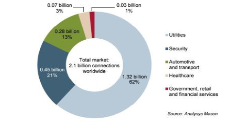

The Customized Global M2M Solution
The Customized Global M2M Solution
The account on the smart machine went back more than
half a century ago. Following that, is the emergence of
futuristic-themed films that featured revolutionary fictional
devices. Nowadays, as technology advances and smart
machines take the spotlight, devices that are seen only in
science fiction movies are now becoming basic and
essential part of human life.
One of mankind's greatest assets is the ability to create logical solutions. Logic and mathematics always come together to derive a solution to a problem, be it something that requires physical work or mere systems of thinking. Of course, we always want to make life easier. In an attempt to avoid the tedious process of manual labor, man invented a system of doing things mechanically instead of manually. Since then, several inspiring innovations are introduced in this age of technological progress.
When the Internet started in the 1950s, it only connected computers into a global network of computers. Now the Internet of Things (IoT) connects not just computer systems, but people, objects and practically anything that has a given unique identifier.
Machine-to-machine (M2M) communication comes into
play by determining how the Internet is expanded with an
array of equipment such as sensors, communication
devices, even wearable technology, to maximize
utilization, improve lives and create opportunities for
business and profit.
Machine-to-machine technology (M2M) is all about People and Machines.
This is a time where communication is driven by
machines, particularly consumer devices communicating
with people and other devices. A person can gather data
and valuable information from these interactions
The data can be used in various applications. Devices
can also be linked to other computers and they can
communicate independently without human intervention,
allowing machine-to-machine, machine-to-mobile,
mobile-to-machine communication.
M2M can exist in almost any environment and can used
in any industry. Successful implementations include, but
are not limited to, mobile communication devices, natural
gas utilities, remote health management as well as sales
automation and management among others.
Human beings are very adaptable. With the rapid changes in consumer electronics and the development of new technology almost every day, consumers are adapting to these changes rather well. In fact, consumers are expecting more from the products that they buy. If machines are getting smart, so as humans.

M2M has accounted 2.8% of global mobile connections
and it is expected to double by the end of 2014. An
association of mobile operators worldwide predicted that
here will be 250 million connections by 2014
The total number of connections will grow from
62 million from 2010 to 2.1 billion connected devices
by 2020, presenting an annual growth rate of 36% in
this market with mobile operators set to take 40
billion Euros in revenue.
M2M presence is also rapidly growing in the Latin American Market, Brazil is the newest open market. As one of the largest countries in terms of population, Brazil is attracting a great deal of investors targeting the M2M space. Currently, several applications using machine-to-machine technology are available in the market.
While M2M technology takes momentum, possible problems such as increase in fraud, unwanted traffic and issues with public IPs as well as inefficient resource management can put your business at risk. Without the right tools to counter the risks, it can possibly imperil the whole business and diminish profit. Choosing the right M2M partner is the most crucial decision that has to be made. LeadingQuest understands the weight of this decision and how it will impact the future of the business. At LeadingQuest, we offer an M2M Cloudbased Platform equipped with features that address those risks, ensuring security, accessibility, performance and revenue.
Benefits of M2M Cloud-based Platform Security
The possibilities are limitless and the market is still continuously growing. Industrial applications in agriculture, manufacturing and logistics, are still taking the lead in generating revenues for M2M providers. And as fast as the medical field is evolving, the need for better equipment to gather and transmit data is growing as well. Smart mobile applications have allowed caregiver and home care providers to have access to treatment and pertinent patient information even when not on site. Wearable devices for fitness tracking and emergency response are now made available in the market, apart from smart watches, smart shoes, smart socks, etc. Wearable technology is slowly reshaping the consumer world and greatly affecting fashion trends. And there is more to come.
However, LeadingQuest sees the potential of extending beyond simple connectivity and extending it anywhere in the world. New opportunities for improving currently deployed applications are welcome challenges for developers and providers alike. Nonetheless, LeadingQuest understands these demands and acknowledges the potential for more cost-effective, revenue generating solutions.
The goal of M2M technology is to make the Internet of things more plausible, and LeadingQuest likes being on top of things in realizing this vision.
Depending on the need and the type of M2M deployment necessary, there may be some components required to ensure the success of the investment and its profitability. LeadingQuest and Parlacom Brazil look forward to working with companies, from different industries all over the world, in developing Machine-to-Machine solutions that are highly customizable to cater to companies various needs.
For business solutions, do not hesitate to reach out to the team by clicking this link http://www.parlacom.net.br/en/contact.html. To learn more about products and services, visit LeadingQuest websites www.leadingquest.com or www.parlacom.net .
© 2013 Parlacom, All Rights Reserved


 English
English Português
Português